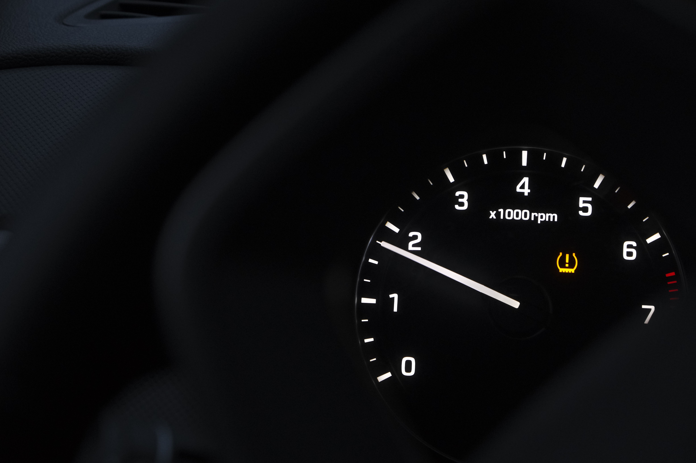

TPMS Warning Light: What It Means & What to Do

The TPMS light is a dashboard warning connected to your vehicle's tire pressure monitoring system. On most vehicles, its symbol looks like a cross-section of a tire with an exclamation mark in the middle.
When the light comes on, one or more tires may be underinflated. Some vehicles also illuminate the warning when the monitoring system itself has a problem. Understanding the difference can help you decide what to check first and whether it is safe to continue driving.
This guide explains what the TPMS light means, why it may flash, how to check tire pressure, and what to do if the warning does not go away.
What Does the TPMS Light Look Like?
The TPMS symbol usually resembles a flat tire viewed from the front, with an exclamation mark inside. Depending on the vehicle, the dashboard may also display a message such as "Low Tire Pressure" or identify a specific tire.
TPMS stands for Tire Pressure Monitoring System. Many vehicles sold in the United States use this system to warn drivers when tire pressure falls significantly below the recommended level.
The system is a useful warning tool, but it does not replace regular tire inspections or checking pressure with a gauge. A tire can lose pressure before the warning appears, and some vehicles do not identify exactly which tire is low.
TPMS Light On vs. Flashing: What's the Difference?
TPMS Light Stays On
A steady TPMS light commonly means that one or more tires have low pressure. Cold weather can cause tire pressure to drop, so the warning may appear on a cold morning even if the tires seemed fine the previous day.
Check all four tires with a reliable pressure gauge as soon as it is safe. Some vehicles also monitor the spare tire, so consult your owner's manual if you are unsure.
TPMS Light Flashes Then Stays On
On many vehicles, the TPMS light flashes for roughly a minute after startup and then remains illuminated when the monitoring system detects a fault. The exact behavior varies by make and model.
Possible causes include a failed tire pressure sensor, a sensor battery that has reached the end of its service life, a communication problem, or a system that needs diagnosis after tire or wheel work.
A system fault does not necessarily mean the tires are properly inflated. Check tire pressure manually and arrange an inspection if the warning continues.
Common Reasons the TPMS Light Comes On
1. Low Tire Pressure
This is one of the most common reasons for a TPMS warning. Tires can gradually lose air through normal permeation, a small puncture, a leaking valve, or a problem with the wheel or tire bead.
2. Cold Weather
Tire pressure generally decreases as temperatures fall. A sudden cold spell may cause pressure to drop enough to trigger the warning. Check the pressure rather than assuming the light is only caused by the weather.
3. A Tire Puncture or Air Leak
A nail, screw, damaged valve stem, or other leak can cause one tire to lose air. If the same tire repeatedly becomes underinflated after you add air, have it inspected for a leak.
4. Faulty TPMS Sensor
Many direct TPMS systems use sensors installed inside the wheels. These sensors have batteries that eventually wear out. A damaged sensor or communication fault may cause the warning to flash or remain on even when tire pressures are correct.
5. Recent Tire or Wheel Service
The warning may appear after a tire rotation, replacement, or wheel change if the system needs to relearn sensor positions or complete a reset procedure. Follow the instructions in your owner's manual.
What to Do When the TPMS Light Comes On
Step 1: Check Whether the Car Is Safe to Drive
Pay attention to how the vehicle handles and look for a visibly flat tire, unusual vibration, or difficulty steering. If a tire looks severely underinflated or the vehicle behaves abnormally, pull over somewhere safe and stop. Do not continue driving on a potentially flat tire.
Step 2: Measure All Tire Pressures
Once it is safe, use a tire pressure gauge to check all four tires. Measure them when the tires are cold, ideally before driving or after the vehicle has been parked for several hours.
Use the recommended pressure listed on the driver's door-jamb placard or in the owner's manual. Do not use the maximum pressure printed on the tire sidewall as the normal target pressure.
Step 3: Inflate the Tires to the Recommended Pressure
Add air to any underinflated tire until it reaches the manufacturer's recommended cold pressure. If a tire is damaged, has a visible puncture, or will not hold air, have it inspected instead of repeatedly inflating it and continuing to drive.
Step 4: Drive and Allow the System to Update
After correcting the pressure, the warning may turn off after a short drive. The time and conditions required vary by vehicle. Some systems update automatically; others require a reset or relearn procedure.
Step 5: Get the System Checked if Needed
If the light stays on even though all tires are correctly inflated, or if it flashes and then remains on, consult your owner's manual or have the TPMS checked by a qualified technician.
How to Reset the TPMS Warning Light
There is no single reset procedure for every vehicle. Many cars clear the warning automatically after the tire pressures are corrected and the vehicle has been driven under the required conditions.
Other vehicles have a TPMS reset button, a dashboard menu option, or a relearn procedure that may require a special tool. Check the owner's manual for the correct method for your specific model.
Do not reset the system simply to make the warning disappear before checking the tires. Resetting will not repair a puncture, correct low pressure, or fix a failed sensor.
Can You Drive with the TPMS Light On?
It depends on the tire condition and the reason for the warning. If a tire is visibly flat, severely underinflated, or the car handles unusually, do not continue driving. Stop safely and arrange roadside assistance or professional help if necessary.
If the tires look normal and the vehicle handles normally, check their pressures as soon as possible. A TPMS warning should not be ignored because underinflated tires can affect handling, braking, fuel economy, and tire wear.
If the warning flashes and then stays on, the monitoring system may not be working correctly. Manually check the tire pressures and arrange diagnosis rather than relying on the warning system.
Why Does the TPMS Light Come On and Then Go Off?
A warning that appears in cold weather and disappears after the tires warm up may be related to temperature changes. However, the pressure may still be below the recommended cold pressure.
Check the tires with a gauge when they are cold. If the warning repeatedly returns, one tire may be losing air, or the system may have an intermittent fault.
How Much Does It Cost to Fix a TPMS Problem?
The cost depends on the cause, vehicle, parts, and labor rates in your area. Adding air may cost little or nothing, while repairing a tire leak or replacing a sensor can cost more.
Sensor replacement may also involve tire removal, installation, programming, or relearning. Ask the repair shop for an estimate based on your vehicle before approving the work.
If the light is caused by low pressure, fixing the underlying leak or correcting the pressure is more important than simply resetting the warning.
Frequently Asked Questions
Is it safe to drive with the TPMS light on?
Do not drive on a visibly flat or severely underinflated tire. If the vehicle handles normally and no tire appears damaged, check all tire pressures as soon as it is safe. The warning should not be ignored.
Why is my TPMS light flashing?
On many vehicles, a flashing TPMS light that then stays on indicates a system fault, such as a failed sensor or communication problem. Check your owner's manual because warning behavior can vary by model.
Where can I find the correct tire pressure for my car?
Look at the tire information placard on the driver's door jamb or check the owner's manual. The recommended pressure is not necessarily the maximum pressure printed on the tire sidewall.
Will the TPMS light turn off by itself?
It may turn off after the tire pressures are corrected and the vehicle is driven, depending on the system. If the warning remains on, check the owner's manual and have the system inspected if necessary.
Can cold weather trigger the TPMS warning?
Yes. Tire pressure generally decreases as temperatures fall. Check the pressure when the tires are cold and inflate them to the vehicle manufacturer's recommended level.